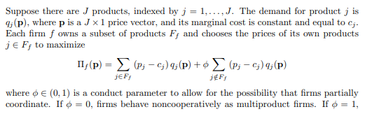
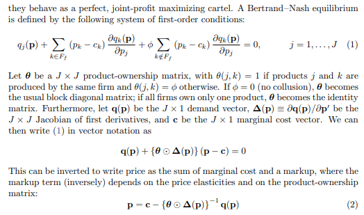
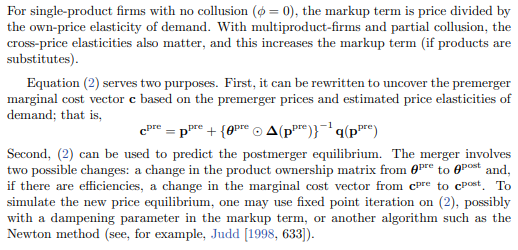

What is Merger Simulation?
The next pages presents code examples of merger simulation implementation.
Merger simulation is a framework that uses economic models grounded in the theory of industrial organization to predict the effect of mergers on prices in markets. Merger simulation is at the frontier of the empirical economics used by competition authorities.
Generally, every merger simulation uses oligopoly model calibrated to observed prices and quantities in the relevant market. It is a quantitative tool to create predictions about the probable outcome effect of a merger on competition. specifically, It aims at giving numerical predictions of price and quantity change due to a merger.
The process can be divided to three stages:
(1) Selection of a structural model of supply and demand.
(2) Calibration model’s parameters to the available data.
(3) Computation of new equilibrium that will prevail post merger.
Let’s briefly expand on these three steps referring to the examples that will be presented below. After that, those who want to delve into the math involved in implementing the examples can continue on this page, and those who want to access the code directly will continue to the following pages.
(1) The structural model
Selecting the structural model is the theoretical part of the process where the researcher needs to fit the right model to the market facts. The structuralist model consists of an assumed supply curve taken from an oligopoly model and a demand system that should resemble consumer preferences. In practice, many time the demand system is chosen to fit data and computation limitations.
Here, on the supply side we’ll use a Bertrand model with differentiated products. On the demand side versions of logit demand systems will be used. Scpecifically, the multinomial logit and one level nested logit will be used in the forthcoming examples. This specification is common for competition agencies to work with.
(2) model calibration
As stated above, the structural model needs to be calibrated to observed data about prices and quantities. (There are cases where its possible to calibrate supply side and solve numerically for the demand system parameters but that’s beyond the scope of this document) Two techniques are common. (1) The hard way is to implement a process of demand estimation to estimate the parameters of the demand function. It is a demanding process both in terms of the required data efforts. Another approach is to calibrate the model using carefully selected parameters based on qualitative knowledge of the market or other limited quantitative data available to the researcher. Here, for demonstration we’ll choose arbitrary demand parameters.
(3) Equilibrium computation
In almost all cases (except for specific cases with linear demand system), no analytical solution exists for the equation system that characterized by the structural model. Some kind of numeric solution method is required. Here I’ll use fixed point iteration algorithm.
Whats next?
The examples shown here are predominant techniques in merger simulation implementation. The next page presents simplified example of multinomial logit. The aim is to make the code as easy as possible to digest. The second example presents a more advanced example of one level nested logit accompanied with production-level code.
For those who with to continue with the theoretical part, I’ve added below mathematical explanations of the Bertrand model with differentiated products , the matrix algebra needed to solve the system and explanations of the relevant logit demand systems.
Equation system of the structural model
First, the equations of the Bertrand model followed by the a short explanation of two logit models.
Bertrand model with differentiated products
A very good explanation of how the betrand model works is written by Jonas Björnerstedt (Swedish competition authority) and Frank Verboven (University of Leuven) in their merger simulation implementation in stata. The next few images are taken from section 2 of their paper:



The multinomial logit model
A good explanation of the logit model is in the vignette of the r package antitrust by authored by Charles Taragin and Michael Sandfort. The explanation below is a selection from the package’s vignette:
Logit demand is based on a discrete choice model that assumes that each consumer is willing to purchase at most a single unit of one product from the \(n\) products available in the market. The assumptions underlying Logit demand imply that the probability that a consumer purchases product \(i \in n\) is given by
\[\begin{align*} s_i=& \frac{\exp(V_i)}{\sum\limits_{k \in n}\exp(V_k)},& \end{align*}\]where \(s_i\) is product \(i\)’s quantity share and \(V_i\) is the (average) indirect utility that a consumer receives from purchasing product \(i\). We assume that \(V_i\) takes on the following form
\[\begin{align*} V_i=&\delta_i + \alpha p_i,&\alpha<0. \end{align*}\]The Logit demand system yields the following own- and cross-price elasticities:
\[\begin{align*} \epsilon_{ii}=&\alpha (1-s_i)p_i \\ \epsilon_{ij}=&-\alpha s_jp_j \end{align*}\]Nested Logit
By construction, Logit demand assumes that diversion occurs according to quantity share. While convenient, one potential drawback of this assumption is that diversion according to share may not accurately represent consumer substitution patterns. One way to relax this assumption is to group the \(n\) products into \(n > H \ge 2\) nests, with products in the same nest assumed to be closer substitutes than products in different nests.
The assumptions underlying nested Logit demand imply that the probability that a consumer purchases product \(i\) in nest \(h\in H\) is given by
\[\begin{align*} s_i=& s_{i|h}s_h,&\\ s_{i|h}=&\frac{\exp(\frac{V_i}{\sigma_h})}{\sum\limits_{k \in h}\exp(\frac{V_k}{\sigma_h})},& 1 \ge \sigma_h \ge 0\\ s_{h}=& \frac{\exp(\sigma_hI_h)}{\sum\limits_{l\in H}\exp(\sigma_lI_l)},& I_h=\log\sum\limits_{k \in h}\exp\left(\frac{V_k}{\sigma_h}\right). \end{align*}\]We assume that \(V_i\) takes on the following form
\[\begin{align*} V_i=&\delta_i + \alpha p_i,& \alpha\le 0. \end{align*}\]The Nested Logit demand system yields the following own- and cross-price elasticities:
\[\begin{align*} \epsilon_{ii}=& [1-s_i + (\frac{1}{\sigma_h}-1)(1-s_{i|h})]\alpha p_i, \\ \epsilon_{ij}=&\begin{cases} -[s_j + (\frac{1}{\sigma_h}-1)s_{j|h}]\alpha p_j, & \text{if $i,j$ are both in nest $h$}.\\ -\alpha s_jp_j, & \text{if $i$ is not in nest $h$ but $j$ is}. \end{cases} \end{align*}\]Notice how these cross-price elasticities are identical to the non-nested Logit elasticities when products \(i,j\) are in different nests, but are larger when products \(i,j\) are in the same nests. This observation is consistent with the claim that products within a nest are closer substitutes than products outside of a nest.
Useful references
For more information about the mathematical implementation and the theory, one can read
Björnerstedt and Verboven
To understand more about the Logit demand system (multinumial and nested logit) and the implementation in these pages its best to read berry 1994.
To get a wider perspective about possible implementations for antitrust practitioners, see the work of Taragin and Sandfort
and finally, a very good source to understand the procedure of demand estimaion, a good place to start is Aviv nevo’s practitioner’s Guide